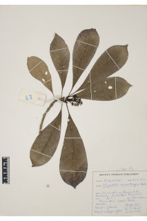
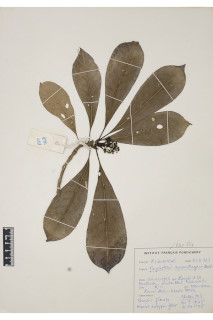

Large shrubs or small trees ca. 4 m tall.
ದೊಡ್ಡ ಗಾತ್ರದ ಪೊದೆಗಳು ಅಥವಾ ಅಂದಾಜು 4 ಮೀ. ಎತ್ತರದವರೆಗಿನ ಸಣ್ಣ ಗಾತ್ರದ ಮರಗಳು.
Large shrubs or small trees ca. 4 m tall.
பெரிய குத்துச்செடி அல்லது சிறிய மரம் 4 மீ. உயரம் வரை வளரக்கூடியது.
Young branchlets usually triangular, glabrous.
ಎಳೆಯ ಕಿರುಕೊಂಬೆಗಳು ಸಾಮಾನ್ಯವಾಗಿ ತ್ರಿಕೋನಾಕಾರದಲ್ಲಿದ್ದು ರೋಮರಹಿತವಾಗಿರುತ್ತವೆ.
Young branchlets usually triangular, glabrous.
சிறிய நுனிக்கிளைகள் குறுக்குவெட்டுத் தோற்றத்தில் முக்கோணமானது, உரோமங்களற்றது.
Leaves simple, opposite, decussate, sometimes ternate; stipules lanceolate, 1.9-2.5 cm long, glabrous, intrapetiolar, sheathing; petiole 1.5-4 cm long, planoconvex in cross section, glabrous; lamina 15-25 x 4-7.5 cm, oblanceolate, apex shortly acuminate, base cuneate - decurrent, margin entire, subcoriaceous to coriaceous, glabrous; midrib raised above; secondary_nerves 8-13 pairs; tertiary_nerves broadly reticulo-percurrent.
ಎಲೆಗಳು ಸರಳವಾಗಿದ್ದು ಕತ್ತರಿಯಾಕಾರದ ಅಭಿಮುಖ ಜೋಡನಾ ವ್ಯವಸ್ಥೆಯಲ್ಲಿರುತ್ತವೆ, ಕೆಲವು ವೇಳೆ 3 ಎಲೆಗಳು ಒಂದು ಗಿಣ್ಣಿನಲ್ಲಿರುತ್ತವೆ; ಕಾವಿನೆಲೆಗಳು ಭರ್ಜಿಯ ಆಕಾರ ಹೊಂದಿದ್ದು, 1.9 ರಿಂದ 2.5 ಸೆಂಮೀ. ಗಾತ್ರದಲ್ಲಿದ್ದು,ತೊಟ್ಟುಗಳ ನಡುವೆ ಇರುತ್ತವೆ ಹಾಗೂ ಒರೆಯ ಸಮೇತವಿರುತ್ತವೆ; ತೊಟ್ಟು 1.5 – 4 ಸೆಂ.ಮೀ.ವರೆಗಿನ ಉದ್ದವಿದ್ದು, ಅಡ್ಡ ಸೀಳಿದಾಗ ಸಪಾಟ ಪೀನ ಮಧ್ಯದ ಆಕಾರ ಹೊಂದಿದ್ದು, ರೋಮರಹಿತವಾಗಿರುತ್ತವೆ;ಪತ್ರಗಳು 15 -25 X4- 7.5 ಸೆಂ.ಮೀ. ಗಾತ್ರ ಹೊಂದಿದ್ದು, ಬುಗುರಿ ಭರ್ಜಿಯ ಆಕಾರ ಹೊಂದಿದ್ದು, ಕಿರಿದಾದ ಕ್ರಮೇಣ ಚೂಪಾಗುವವರೆಗಿನ ತುದಿ, ಬೆಣೆಯಾಕಾರದ-ತಳಭಾಗಕ್ಕೆ ವಿಸ್ತರಿಸಿದ ಬುಡ, ನಯವಾದ ಅಂಚು, ಉಪ-ತೊಗಲು ಮಾದರಿಯಿಂದ ತೊಗಲನ್ನೋಲುವವರೆಗಿನ ಮೇಲ್ಮೈ ಹೊಂದಿರುತ್ತವೆ ಹಾಗೂ ರೋಮರಹಿತವಾಗಿರುತ್ತವೆ; ಮಧ್ಯನಾಳ ಪತ್ರದ ಮೇಲ್ಭಾಗದಲ್ಲಿ ಉಬ್ಬಿರುತ್ತದೆ;ಎರಡನೇ ದರ್ಜೆಯ ನಾಳಗಳು 8 ರಿಂದ 13 ಜೋಡಿಗಳಿರುತ್ತವೆ;ಮೂರನೇ ದರ್ಜೆಯ ನಾಳಗಳು ವಿಶಾಲ ಜಾಲಬಂಧ ನಾಳ ವಿನ್ಯಾಸದಲ್ಲಿದ್ದು ಎಲೆ ದಿಂಡಿಗೆ ಅಡ್ಡವಾಗಿ ಕೂಡುವ ಮಾದರಿಯವು.
Leaves simple, opposite, decussate, sometimes ternate; stipules lanceolate, 1.9-2.5 cm long, glabrous, intrapetiolar, sheathing; petiole 1.5-4 cm long, planoconvex in cross section, glabrous; lamina 15-25 x 4-7.5 cm, oblanceolate, apex shortly acuminate, base cuneate - decurrent, margin entire, subcoriaceous to coriaceous, glabrous; midrib raised above; secondary_nerves 8-13 pairs; tertiary_nerves broadly reticulo-percurrent.
இலைகள் தனித்தவை, எதிரடுக்கமானவை, குறுக்குமறுக்கானவை, சிலசமயங்களில் மூன்று இலைகளுடையது; இலையடிச்செதில் ஈட்டி வடிவானது, 1.9-2.5 செ.மீ. நீளமானது, உரோமங்களற்றது, இலையடிச்செதில் காம்புகளுக்கிடையே (இண்ட்ராபீட்டியோலார்) உடையது, தண்டிற்க்கு உறைப்போன்றது; இலைக்காம்பு 1.5-4 செ.மீ. நீளமானது, குறுக்குவெட்டுத் தோற்றத்தில் பிளேனோகான்வக்ஸ், உரோமங்களற்றது; இலை அலகு 15-25 X 4-7.5 செ.மீ., தலைகீழ் ஈட்டி வடிவானது, அலகின் நுனி குட்டையான அதிக்கூரியது, அலகின் தளம் ஆப்பு வடிவானது-டெக்கரண்ட், அலகின் விளிம்பு முழுமையானது, சப்கோரியேசியஸ் முதல் கோரியேசியஸ், உரோமங்களற்றது; மையநரம்பு மேற்புறத்தில் அலகின் பரப்பைவிட உயர்ந்து இருக்கும்; இரண்டாம் நிலை நரம்புகள் 8-13 ஜோடிகள்; மூன்றாம் நிலை நரம்புகள் அகன்ற வலைப்பின்னல்-பெர்க்கரண்ட் போன்றவை.
Inflorescence terminal corymbose cymes; flowers white.
ಪುಷ್ಪಮಂಜರಿಗಳು ತುದಿಯಲ್ಲಿನ ಮಧ್ಯಾರಂಭಿ ನೀಳಛತ್ರ ಮಾದರಿಯವು;ಹೂಗಳು ಬಿಳಿ ಬಣ್ಣದಲ್ಲಿರುತ್ತವೆ.
Inflorescence terminal corymbose cymes; flowers white.
மஞ்சரி தண்டின் நுனியில் காணப்படும் கோரியம்போஸ் சைம் வகை மஞ்சரி; மலர்கள் வெள்ளை நிறமானது.
Drupe, oblong, purple to 3 cm long, with two planoconvex pyrenes; seeds 1 per pyrene.
ಡ್ರೂಪ್ಗಳು ಚತರಸ್ರದ ಆಕಾರ ಹೊಂದಿದ್ದು ಕೆನ್ನೀಲಿ ಬಣ್ಣದಲ್ಲಿದ್ದು 3 ಸೆಂ.ಮೀವರೆಗಿನ ಉದ್ದವಿರುತ್ತವೆ.
Drupe, oblong, purple to 3 cm long, with two planoconvex pyrenes; seeds 1 per pyrene.
உள்ளோட்டுத்தசைகனி (ட்ரூப்), நீள்சதுர வடிவானது, பர்புள் நிறமானது 3 செ.மீ. நீளமானது, 2 பைரீன்; ஒவ்வொரு பைரீனிம் ஒர் விதையுடையது.

 
